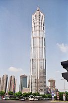

A felhőkarcolók nagyon magas, lakható épületek. Nincs általános meghatározás arra, hogy milyen magasság felett nevezünk felhőkarcolónak egy épületet, leginkább azokra mondjuk, amik kimagaslanak a többi épületek közül. Az Amerikai Egyesült Államokban és Európában most az alsó határ úgy 150 m körül van, a 300 méternél magasabb épületekre a supertall („szupermagas”) jelzőt használják. De ennél alacsonyabbakra is rámondják, ha jelentősen kimagaslik a környezetből. A felhőkarcoló (skyscraper) kifejezést a 19. századtól használják, amikor az Egyesült Államokban, New Yorkban és Chicagóban megjelentek az első magas épületek. Egy felhőkarcoló építése persze sok gonddal jár. Egy nagyobbnak már külön infrastruktúrával kell rendelkeznie, mert már akkora, mint egy kisebb város. Gondot jelent az épület stabilitása, fenntartása és az épületen belüli közlekedés is. Ennek ellenére a 20. század elejétől szinte minden fejlett város épített már felhőkarcolót, sőt már éles verseny alakult ki, úgyhogy napjainkban is egyre többet és egyre magasabbakat építenek. A 19. század végéig ritkák voltak a 6 emeletnél magasabb épületek. Ha lett volna megfelelően erős anyag és építési technika, akkor is gondot jelentett a felvonó és a vízpumpa hiánya. A vizet 50 méternél magasabbra már csak nehézkesen tudták felnyomni. Egy korai példa a magasabb épületekre a Yemeni Shibam város, ahol a 16. században felépítettek, úgy 500 darab 5–9 emeletes tornyot. A 17. században a skóciai Edinburgh-ben, amikor a városfal szűk lett egyre magasabban kezdtek el építeni. Általánossá váltak a 11 emeletes épületek is, de a legnagyobb 14 emeletes volt. Az Empire State Building több mint 40 éven keresztül, egészen 1972-ig a Föld legmagasabb épülete volt, amíg meg nem épült a World Trade Center 417 méteres magasságával, amit két évvel később 1974-ben a chicagói Sears Tower előzött meg 442 méterével. Erre az időre New York már elveszítette kizárólagos dominanciáját. Az Egyesült Államok többi városában, főleg Chicagóban is elkezdtek épülni a felhőkarcolók. 1980-tól kezdve rengeteg felhőkarcolót kezdtek el építeni, de már nem olyan magasakat.